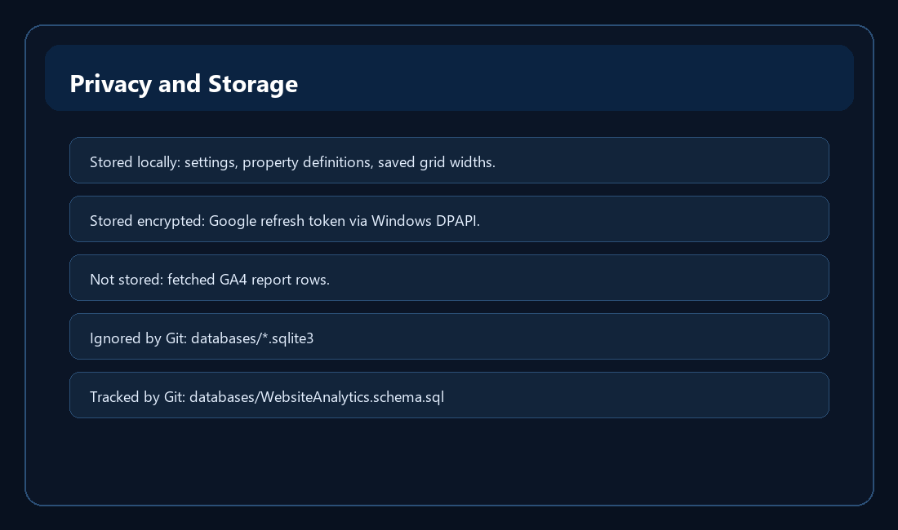

Privacy and Storage

Memory-only analytics
- The report snapshot is held in memory. Closing the app discards location, page/action, graph, and realtime report rows.
- This design keeps the project simple and avoids building a second analytics database.
What SQLite stores
- SQLite stores local settings and website definitions: dashboard defaults, property IDs, OAuth setup values, saved grid widths, and the DPAPI-encrypted refresh token.
- The actual local SQLite file is ignored by Git. The schema SQL is tracked so a fresh database can be created at startup if needed.
Open-source safety
Do not commit local databases, OAuth secrets, encrypted refresh tokens, credential JSON files, keys, PEM files, or .env files.